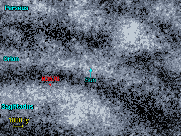
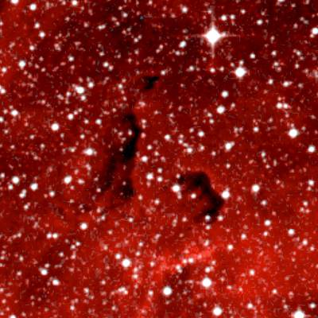
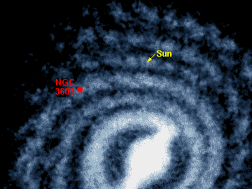

سديم صغير موجود في ذراع القوس المجري يقع على بعد آلاف السنين الضوئية من سديم إيتا كارينا. عندما اكتشف جون هرشل هذا السديم عام 1834 لم يكن يستطيع رؤية سوى بضعة بقع سديمية و في النهاية أعطي لهذا السديم ستة تصنيفات رقمية مختلفة. في أيامنا هذه يطلق الفلكيون على السديم بأكمله اسم NGC 3576.
هذه لائحة بالسدم في هذه المنطقة. و هي عبارة عن ستة بقع من السدم تم تصنيفها في القرن التاسع عشر. يمتد السديم عرضا بمقدار 1 درجة قوسية في سماء الليل، و قطره يبلغ 100 سنة ضوئية. و تتضمن اللائحة سديما بعيدا يدعى NGC 3603 في نفس المكان من السماء. و يمثل هذا السديم الجزء الأكثر لمعانا من منطقة سديمية هائلة و التي يحتمل أنها تمتد لمسافة 1000 سنة ضوئية في الفضاء.
1 2 3 4 5 6 7 8
Catalogue Equatorial Galactic Size Type Distance Size Other Names
Number Coordinates Coordinates (arcmins) (ly) (ly)
RA (2000) Dec l° b°
--------------------------------------------------------------------------------------
NGC 3576 11 11.5 -61 22 291.3 -0.8 2' E 6000 3
NGC 3579 11 12.0 -61 15 291.3 -0.7 3' E 6000 5
NGC 3581 11 12.0 -61 18 291.3 -0.7 3' E 6000 5
NGC 3582 11 12.2 -61 16 291.3 -0.7 3' E 6000 5
NGC 3584 11 12.3 -61 14 291.3 -0.6 3' E 6000 5
NGC 3586 11 12.5 -61 21 291.4 -0.7 2' E 6000 3
NGC 3603 11 15.1 -61 16 291.6 -0.5 20' E 20000 120
|
--------------------------------------------------------------------------------------- العمود 1: إسم السديم النظامي في المصنف. العمود 2: إحداثيات المطلع المستقيم و الميل - حولية فلكية للعام 2000. العمود 3: إحداثيات الطول (l) و العرض (b) المجريين. العمود 4: الحجم الزاوي للسديم بالدقيقة القوسية. العمود 5: نوع السديم E = إصداري, R = إنعكاسي. العمود 6: المسافة التقريبية إلى السديم مقدرة بالسنة الضوئية. العمود 7: الحجم التقريبي للسديم مقدرا بالسنة الضوئية. العمود 8: الاسم البديل للسديم. |
هنا نجد مجموعة من العناقيد النجمية القريبة من السديم NGC 3576 و لكن يعتقد بأن العديد منها مرتبط بالسديم. و في أسفل الجدول أضيف عنقود نجمي يدعى NGC 3603 و هو عنقود فتي يبعد 20 000 سنة ضوئية.
1 2 3 4 5 6 7
Catalogue Equatorial Galactic Size Distance Age Other Names
Name Coordinates Coordinates (arcmins) (ly) (million
RA (2000) Dec l° b° years)
-------------------------------------------------------------------------------
NGC 3572 11 10.4 -60 15 290.7 +0.2 5' 6500 8
Hogg 10 11 10.8 -60 24 290.8 +0.1 3' 5800 6
Trumpler 18 11 11.5 -60 40 291.0 -0.1 5' 4450 16
Hogg 11 11 11.7 -60 24 290.9 +0.1 2' 7400 12
Collinder 240 11 11.7 -60 19 290.9 +0.2 20' 5150 14
NGC 3590 11 13.0 -60 47 291.2 -0.2 3' 5400 17
NGC 3603 11 15.2 -61 16 291.6 -0.5 1' 20000 1
|
العمود 1: إسم العنقود النجمي النظامي في المصنف. العمود 2: إحداثيات المطلع المستقيم و الميل - حولية فلكية للعام 2000. العمود 3: إحداثيات الطول (l) و العرض (b) المجريين. العمود 4: الحجم الزاوي للعنقود النجمي مقدرا بالثانية القوسية. العمود 5: المسافة إلى العنقود النجمي. العمود 6: العمر التقريبي للعنقود النجمي مقدرا بملايين السنوات. العمود 7: الاسم البديل للعنقود النجمي.
References:
Dias W, Alessi B, Moitinho A, Lepine J, (2002). New catalogue of optically
visible open clusters and candidates. Astron and Astrophys, 389, 871.
Pandey A, Ogura K, Sekiguchi K, (2000), Stellar Contents of the Galactic
Giant HII Region NGC 3603, Publ. Astron. Soc. Japan, 52, 847.
|
تظهر هذه الخريطة موضع السديم NGC 3576 في السماء.و تظهر السدم NGC 3576, 3579, 3581, 3582, 3584, 3586 كبقع لامعة في مركز السديم. و إلى الشمال من سديم NGC 3576 يوجد العديد من العناقيد النجمية القريبة نسبيا إلى السديم. و المنطقة الموجودة إلى يسار السديم NGC 3576 تعتبر منطقة منفصلة بالكامل و تدعى NGC 3603 و تقع إلى الخلف من سديم NGC 3576 على بعد 14 000 سنة ضوئية.
|  | لا نعرف المسافة الدقيقة إلى سديم NGC 3576 و لكن من المؤكد بأنه يقع قرب الحافة الأمامية لذراع القوس المجري. و إذا افترضنا بأن العناقيد النجمية القريبة مرتبطة بالسديم فإن بعده يقدر ب 6000 سنة ضوئية. |
كرات 'بوك' في سديم NGC 3576يقع إلى الشمال من هذا السديم، سديمان عاتمان يبلغ قطر كل منها 2 سنة ضوئية، و هي تجمعات كثيفة من الغاز و الغبار(على الرغم من أنه لو أمكنك الدخول إليها فستجد فراغا هائلا مثاليا داخلها) يدعى هذا النوع من السدم 'كرات بوك'"Bok Globules" (سميت كذلك نسبة إلى Bart Bok الذي درس العديد من هذه النماذج من السدم) و العديد منها يحوي نجوما قيد النشأة داخله. يبلغ قطر هذه الكرات 1000 مرة ضعف قطر المجموعة الشمسية. |
 الكرات الغازية في سديم NGC 3576 Image size: 0.11°x0.11° |
إلى الغرب من سديم NGC 3576 يوجد سديم أكثر بعدا ، و لكنه محجوب و القسم اللامع منه مرئي بالنسبة لنا. ربما يكون هذا السديم هو الأضخم على مستوى المجرة كاملة. (إنه نموذج لمنطقة هائلة من الهيدروجين " HII "). و بالنسبة لفلكيين مفترضين متواجدين في مجرات مجاورة سيبدو هذا السديم كبقعة لامعة بلون وردي و متوضعة في ذراع القوس من المجرة. هذه الصورة تبين المنطقة المركزية اللامعة لهذا السديم و التي تأوي عناقيد نجمية مكدسة و متراصة بشدة و فتية جدا.
|  | قدرت المسافة إلى سديم NGC 3603 ب 20 000 سنة ضوئية. و الحجم الكلي للسديم غير معروف بدقة و لكنه بقطر أكثر من 1000 سنة ضوئية و ربما يكون بقطر 2000 سنة ضوئية. |
في الأسفل صورة لعنقود النجوم NGC 3603 الموجود في وسط السديم، و هو عنقود فتي جدا، و على الرغم من أن بعض نجومه تبلغ أعمارها بضعة ملايين سنة ، فإن متوسط أعمار هذه النجوم يبلغ أقل من 1 مليون سنة. هذه الصورة مأخوذة بالطيف ما دون الأحمر باستخدام تلسكوب Very Large Telescope.